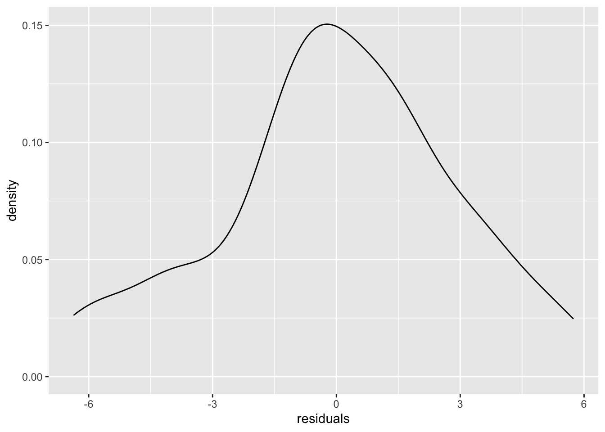
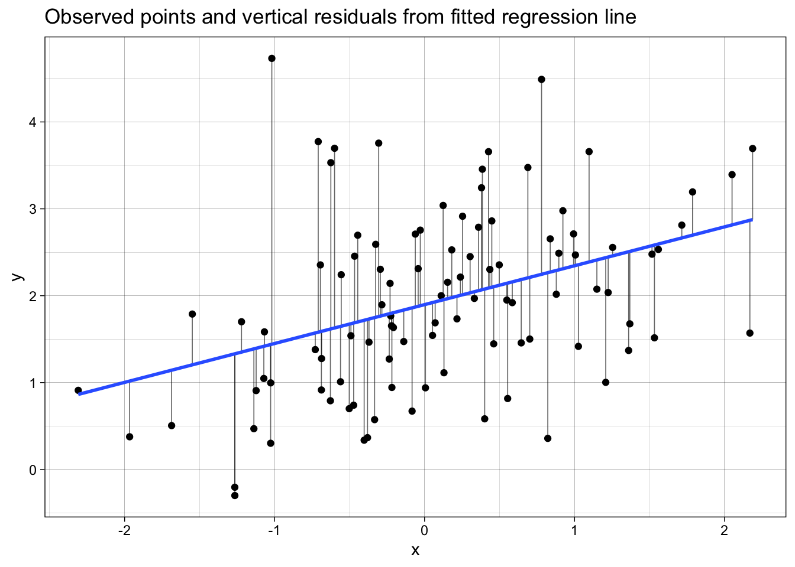
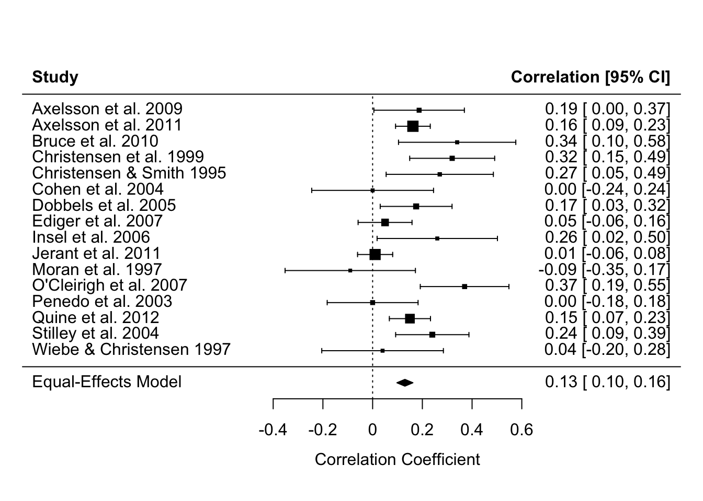
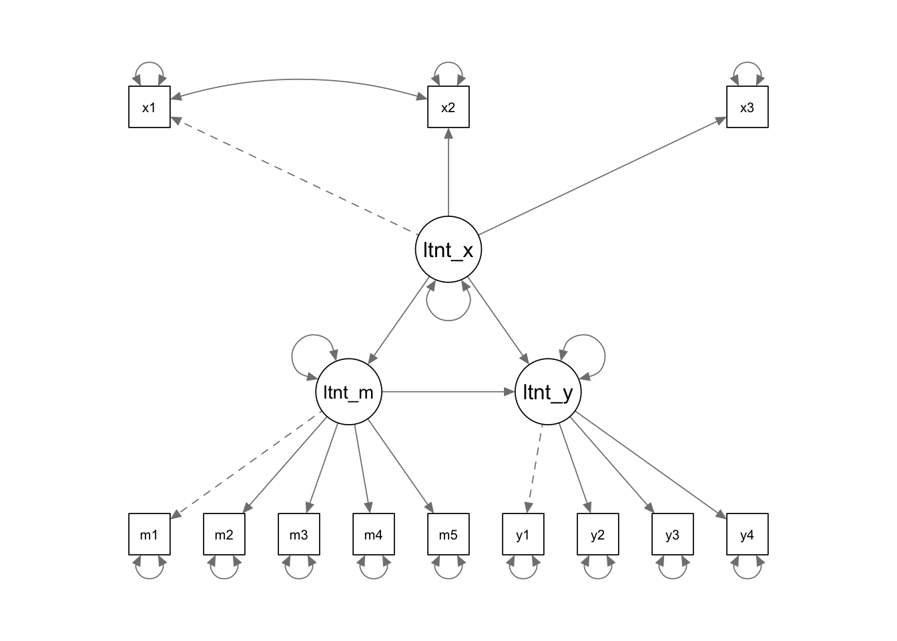
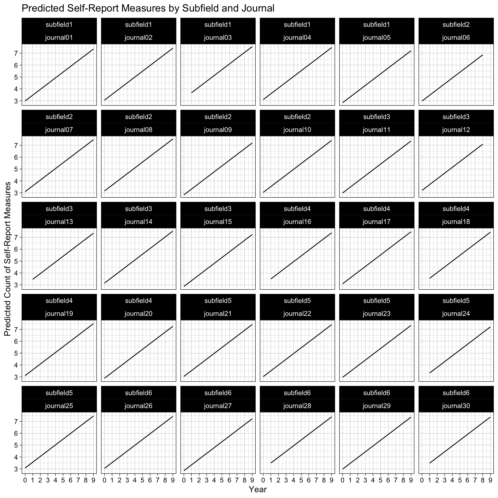

library(faux)
library(lme4)
library(ggplot2)
library(dplyr)
library(tidyr)
library(scales)
library(modelbased)
library(parameters)
library(see)
library(lavaan)
library(semPlot)17 Understanding (almost) everything as a Linear Model
The ease of automated reporting has to be strongly balanced against thorough understanding of the models themselves.
- The linear model
- (almost) everything is a linear model
- even means and SDs
- even correlations
- even named tests
- even CFA and path analysis
Notes on what to add from last year:
- it’s all a linear model - resources and code
- slides on relating y = mx + c to regression
- the estimate for an intercept only model is the mean, that’s what a mean is. The error term is the standard deviation; that’s what a SD is.
- meta-analyses are intercept only models with fixed or random effects for site. add code for this.
- use meta-analysis as the entry point for random effect models and Wilkinson notation for it.
- sum scores are a specific factor model with equal loadings.
17.1 The linear model
Equation of a line as we are taught in school:
\[ y = m*x + c \]
Bridge from school notation to model notation:
\[ \underbrace{y}_{\text{outcome}} = \underbrace{c}_{\beta_{\text{intercept}}} + \underbrace{m}_{\beta_{\text{slope}}} \cdot x \]
The linear model and null hypothesis:
\[ y_i = \beta_{\text{intercept}} + \beta_{\text{slope}} \cdot x_i + \varepsilon_i \]
This adds an error term, to quantify uncertainty and noise.
Wilkinson notation to specify and fit the regression in R:
fit <- lm(y ~ 1 + x,
data = dat)- The IV, \(x\),
- The intercept is specified in the model as “1” because it is
Results from the model for interpretation
model_parameters(fit)| Parameter | Coefficient | SE | CI | CI_low | CI_high | t | df_error | p |
|---|---|---|---|---|---|---|---|---|
| (Intercept) | 3.5046194 | 0.2072665 | 0.95 | 3.097561 | 3.9116781 | 16.90876 | 598 | 0 |
| x | 0.2008324 | 0.0116360 | 0.95 | 0.177980 | 0.2236849 | 17.25952 | 598 | 0 |
Predictions from the model involve inserting values of \(x\) into the original regression equation to calculate the predicted value of \(y\).
Imagine we have a (new) participant with a depression score of 25 on the BDI-II (moderately depressed). We can use the existing regression estimates to find their predicted sleep score on the PSQI (\(y\)).
\[ \begin{aligned} y &= \beta_{\text{intercept}} &+& \quad \beta_{\text{slope}} \cdot x \\ &= 3.50 &+& \quad 0.20 \cdot 25 \\ &= 8.5 \end{aligned} \]
Predicted sleep quality is 8, where scores > 5 indicate poor sleep and clinical populations often score in the 8 to 14 range.
The association between depression and sleep quality is tested against the null hypothesis that the association - ie the slope - is zero. Detectable non-zero slope allows for the inference that depression is associated with poor sleep.
\[ H_0\!: \beta_{\text{slope}} = 0 \]
17.2 Understanding the mean and SD in terms of the linear model and vice versa
set.seed(42)
dat <- data.frame(y = rnorm(n = 46, mean = 1.2, sd = 2.45))
mean(dat$y)[1] 1.059365sd(dat$y)[1] 2.864655fit <- lm(data = dat,
formula = y ~ 1)
summary(fit)
Call:
lm(formula = y ~ 1, data = dat)
Residuals:
Min 1Q Median 3Q Max
-6.3677 -1.4083 -0.1053 1.6968 5.7429
Coefficients:
Estimate Std. Error t value Pr(>|t|)
(Intercept) 1.0594 0.4224 2.508 0.0158 *
---
Signif. codes: 0 '***' 0.001 '**' 0.01 '*' 0.05 '.' 0.1 ' ' 1
Residual standard error: 2.865 on 45 degrees of freedomcoef(fit)["(Intercept)"] # intercept, ie mean when an intercept only model(Intercept)
1.059365 sigma(fit) # Residual standard error, ie SD when an intercept only model[1] 2.864655dat <- dat |>
mutate(intercept = coef(fit)["(Intercept)"],
residuals = residuals(fit))
ggplot(dat, aes(residuals)) +
geom_density() 
17.3 Understanding regression fit and residuals
The vertical lines are the residuals: the difference between each observed value of y and the value predicted by the regression line. The regression line is the line that makes the sum of the squared residuals as small as possible, which is why it is called “ordinary least squares” regression.
# packages
library(ggplot2)
library(broom)
library(dplyr)
set.seed(123)
# 1. Simulate data for y ~ x
n <- 100
x <- rnorm(n, mean = 0, sd = 1)
e <- rnorm(n, mean = 0, sd = 1) # noise
y <- 2 + 0.5 * x + e # true model: y = 2 + 0.5x + error
dat <- data.frame(x = x, y = y)
# 2. Fit linear model
fit <- lm(y ~ 1 + x, data = dat)
# 3. Get fitted values and residuals using broom
dat_aug <- augment(fit) %>%
# keep only the relevant columns and give them sensible names
transmute(
x = x,
y = y,
fitted = .fitted,
resid = .resid,
std_resid = .std.resid,
hat = .hat,
cooksd = .cooksd
)
# 4. Plot: points + fitted line + vertical segments (residuals)
p <- ggplot(dat_aug, aes(x = x, y = y)) +
# vertical segments from point to fitted value at same x
geom_segment(aes(xend = x, yend = fitted),
linewidth = 0.3, alpha = 0.6) +
# points
geom_point() +
# fitted regression line
geom_smooth(method = "lm", se = FALSE) +
labs(
x = "x",
y = "y",
title = "Observed points and vertical residuals from fitted regression line"
) +
theme_linedraw()
p
The plot below lets you explore this yourself, with a smaller set of 15 points from the same model.
- Click on an empty part of the plot to add a point there.
- Click on an existing point to remove it.
The regression line, residuals, and fit statistics update immediately. Some things to try:
- Add a point far above or below the line, near the middle of the x-axis. Then add one the same distance from the line at the far left or right of the plot. Which one moves the line more? Points with extreme x values have more “leverage”.
- Remove all the points, then add them back one at a time. What happens with only one point? With two?
- Add a cluster of points that follow a different pattern, and watch the slope and R² change.
- Show the intercept-only model. This is the model
lm(y ~ 1), whose prediction for every point is simply the mean of y. R² is the proportion by which the regression line reduces the sum of squared residuals compared with this model.
17.4 Almost everything is a linear regression model
One of the most important insights we had when learning statistics is that most common analyses are just a linear regression model. In our opinion, this idea should be introduced when we start learning statistical inference rather than years into our education.
We strongly recommend you read this blog post on the subject in its entirety. Below, we pull out some examples from the blog, as well as other examples of things that are just the linear model.

17.4.0.1 Correlations are linear regression models
Correlations are just a linear regression model where the IV and DV have both been standardized by their sample Standard Deviations (i.e., score/SD).
Whereas the Beta coefficient from the linear regression model is interpreted as “a one-point increase in the IV is associated with a [Beta]-points change on the DV”, the Pearson’s r correlation merely modifies the units from the native scale to the number of Standard Deviations. I.e., “a one-SD increase in the IV is associated with a [Beta]-SD changes (aka r) on the DV”.
library(faux)
set.seed(43)
data_crosssectional <- faux::rnorm_multi(
n = 600,
vars = 2, # two variables, pre and post
varnames = c("x", "y"),
mu = c(0, 0.5), # population mean by variable
sd = 1, # population sd by variable or, if a single value given, SD for all variables
r = 0.35 # correlation matrix or, if a single value given, correlation between all variables
) %>%
as_tibble() # faux returns a data.frame; we convert to tibble for consistency
cor(data_crosssectional) x y
x 1.0000000 0.3596644
y 0.3596644 1.0000000Note equivalent estimates (r = .36):
fit_named <- cor.test(formula = ~ y + x,
data = data_crosssectional,
method = "pearson")
model_parameters(fit_named)| Parameter1 | Parameter2 | r | CI | CI_low | CI_high | t | df_error | p | Method | Alternative |
|---|---|---|---|---|---|---|---|---|---|---|
| y | x | 0.3596644 | 0.95 | 0.2879087 | 0.4274042 | 9.426021 | 598 | 0 | Pearson’s product-moment correlation | two.sided |
fit_lm <- lm(formula = scale(y) ~ 1 + scale(x),
data = data_crosssectional)
model_parameters(fit_lm)| Parameter | Coefficient | SE | CI | CI_low | CI_high | t | df_error | p |
|---|---|---|---|---|---|---|---|---|
| (Intercept) | 0.0000000 | 0.0381247 | 0.95 | -0.0748747 | 0.0748747 | 0.000000 | 598 | 1 |
| scale(x) | 0.3596644 | 0.0381565 | 0.95 | 0.2847273 | 0.4346016 | 9.426021 | 598 | 0 |
17.4.0.2 t-test are linear regression models
t-tests are just linear regression models where the IV - the group variable - has been dummy-coded, e.g., from control/intervention to 0/1.
Whereas the Beta coefficient from the linear regression model is interpreted as “a one-point increase in the IV is associated with a [Beta]-points change on the DV”, the t-test merely modifies this by treating “0” as one condition and “1” as the other. I.e., “a one-point increase in the IV, aka the difference between conditions, is associated with a [Beta]-points change (aka \(M_{diff}\)) on the DV”.
Note equivalent estimates of the difference in means (\(M_{diff}\) = 0.33) and p-values (p = .175).
fit_named <- t.test(formula = score ~ condition,
data = dat_experiment,
var.equal = TRUE)
model_parameters(fit_named)| Parameter | Group | Mean_Group1 | Mean_Group2 | Difference | CI | CI_low | CI_high | t | df_error | p | Method | Alternative |
|---|---|---|---|---|---|---|---|---|---|---|---|---|
| score | condition | 0.4104641 | 0.079845 | 0.3306191 | 0.95 | -0.1502164 | 0.8114546 | 1.368893 | 78 | 0.1749622 | Two Sample t-test | two.sided |
dat_experiment_dummycoded <- dat_experiment
fit_lm <- lm(score ~ 1 + condition_numeric,
data = dat_experiment)
model_parameters(fit_lm)| Parameter | Coefficient | SE | CI | CI_low | CI_high | t | df_error | p |
|---|---|---|---|---|---|---|---|---|
| (Intercept) | 0.0798450 | 0.1707826 | 0.95 | -0.2601570 | 0.4198470 | 0.4675242 | 78 | 0.6414285 |
| condition_numeric | 0.3306191 | 0.2415231 | 0.95 | -0.1502164 | 0.8114546 | 1.3688925 | 78 | 0.1749622 |
17.4.0.3 Many non-parametric tests are just linear models with transformations
When the assumptions of parametric tests like t-tests and correlations fail, we are often recommended to use ‘non-parametric’ tests instead. Many of these are just linear models with rank transformations.
17.4.0.3.1 Spearman’s \(\rho\) correlations
Note equivalent estimates (\(\rho\) = .34):
fit_named <- cor.test(formula = ~ y + x,
data = data_crosssectional,
method = "spearman")
model_parameters(fit_named)| Parameter1 | Parameter2 | rho | S | p | Method | Alternative |
|---|---|---|---|---|---|---|
| y | x | 0.3625907 | 22946672 | 0 | Spearman’s rank correlation rho | two.sided |
fit_lm <- lm(formula = rank(y) ~ 1 + rank(x),
data = data_crosssectional)
model_parameters(fit_lm)| Parameter | Coefficient | SE | CI | CI_low | CI_high | t | df_error | p |
|---|---|---|---|---|---|---|---|---|
| (Intercept) | 191.5415025 | 13.2182644 | 0.95 | 165.5816388 | 217.5013662 | 14.490670 | 598 | 0 |
| rank(x) | 0.3625907 | 0.0381102 | 0.95 | 0.2877446 | 0.4374368 | 9.514266 | 598 | 0 |
17.4.0.3.2 Mann-Whitney U-test (aka Wilcoxon rank-sum test)
Note equivalent estimates of the difference in p-values (p = .183).
fit_named <- wilcox.test(formula = score ~ condition,
data = dat_experiment,
correct = FALSE) # without continuity correction
model_parameters(fit_named)| Parameter1 | Parameter2 | W | p | Method | Alternative |
|---|---|---|---|---|---|
| score | condition | 939 | 0.1836501 | Wilcoxon rank sum exact test | two.sided |
fit_lm <- lm(rank(score) ~ 1 + condition_numeric,
data = dat_experiment)
model_parameters(fit_lm)| Parameter | Coefficient | SE | CI | CI_low | CI_high | t | df_error | p |
|---|---|---|---|---|---|---|---|---|
| (Intercept) | 37.025 | 3.655605 | 0.95 | 29.747250 | 44.30275 | 10.128283 | 78 | 0.0000000 |
| condition_numeric | 6.950 | 5.169806 | 0.95 | -3.342293 | 17.24229 | 1.344345 | 78 | 0.1827338 |
17.4.0.4 Meta-analyses are linear regression models
Specifically, linear models that weight by the sample size (in much older studies) or the effect size’s variance (in modern meta analyses) so that larger studies with more precisely estimated effect sizes influence the meta-analysis estimate more. You can see in the forest plot below that the more precise estimates - those with narrower Confidence Intervals - have larger weights, represented by the larger squares. Psychology doesn’t use regression weightings in non-meta-analysis contexts very often, but perhaps we should (Alsalti et al., 2026).
The other main conceptual difference between meta-analyses and original analyses is that meta-analyses typically use the results of original studies as their data (i.e., effect size estimates), rather than the underlying original data itself. However, this is still something we can use the linear regression functions for, simply by supplying it with effect size estimates rather than participant-level data.
See this helpful blog post by the developer of the {metafor} package for meta-analysis for more details of this underlying equivalence and the small implementation differences between R packages and methods.
Note equivalent estimates of the meta-analysis effect size (r = .13).
library(metafor)
data_meta <-
escalc(measure = "COR",
ri = ri,
ni = ni,
data = dat.molloy2014) %>% # use metafor's built-in dataset
select(authors,
year,
pearsons_r = yi,
pearsons_r_variance = vi)
# fit an equal-effects meta-analysis model
# these are less commonly recommended these days, but it illustrates the point
fit_meta <- rma(yi = pearsons_r,
vi = pearsons_r_variance,
data = data_meta,
method = "EE")
forest(fit_meta, slab = paste(authors, year))
# model_parameters(fit_meta) # optionally, print table to see that model_parameters() works with many different modelsfit_lm <- lm(pearsons_r ~ 1,
weights = 1/pearsons_r_variance,
data = data_meta)
model_parameters(fit_lm)| Parameter | Coefficient | SE | CI | CI_low | CI_high | t | df_error | p |
|---|---|---|---|---|---|---|---|---|
| (Intercept) | 0.129861 | 0.0271529 | 0.95 | 0.0719859 | 0.1877361 | 4.782577 | 15 | 0.000242 |
17.4.0.5 Means and Standard Deviations are linear regression models
If we want to take this even further, we can see that other named ‘tests’ that are just linear regression models even includes ‘the sample mean’ and ‘the sample Standard Deviation’ of an intercept-only linear regression model.
An intercept-only linear regression model has no predictors, only the intercept. Eg., y ~ 1.
The sample mean is the estimate of the intercept of an intercept-only linear regression model.
The sample Standard Deviation is the estimate of the residual standard error of an intercept-only linear regression model.
Note the equivalent estimates.
fit_named <- dat_experiment |>
summarize(mean = mean(score),
sd = sd(score))
fit_named| mean | sd |
|---|---|
| 0.2451546 | 1.086081 |
fit_lm <- lm(formula = score ~ 1,
data = dat_experiment)
model_parameters(fit_lm) | Parameter | Coefficient | SE | CI | CI_low | CI_high | t | df_error | p |
|---|---|---|---|---|---|---|---|---|
| (Intercept) | 0.2451546 | 0.1214276 | 0.95 | 0.0034589 | 0.4868502 | 2.018936 | 79 | 0.0468864 |
sigma(fit_lm) # residual standard error[1] 1.08608217.5 Wilkinson notation
Simple regression
~ regress variable to the right of this onto the left of this. e.g., y ~ x is “x causes/predicts/is associated with y”.
Dependent variables (the thing caused or predicted) are to the left of ~ whereas independent variables are to the right.
Intercepts are specified as 1. E.g., y ~ 1 + x. Note that intercepts are often implicit, and are usually calculated even if not specified. i.e., y ~ x == y ~ 1 + x
Understand beta regression coefficients by going back to your high school math for the slope of a line: \(y = m \times x + c\). This can be rewritten by swapping the place of the intercept (c) and slope (m), relabeling the variables, and adding the error term: \(y \sim \beta_i + \beta_xx + e\).
Multilevel models: Fixed vs random effects
When categorical, fixed effects variables are typically “exhaustive”, in that the levels present in the data are all the possible options (they ‘exhaust’ the possible options). In contrast, random effects variables are “non-exhaustive”, in that other levels might exist in the world. For example, I would be more likely to use ‘journal’ as a random effect variable because I only have 5 journals per subfield in my data, but many other journals exist in these subfields in the real world.
Additionally, random effects can be used to acknowledge dependencies in data. For example, if participants’ positive affect was measured 5 times a day for 1 week, you would have 35 data points per participant. Simple regressions are fixed effects only and assume independence of the data. Mixed effects models allow you to include random effects to acknowledge that the same participant produced these 35 data points.
Separately, fixed effects variables assume that there is a single true variable for each parameter in the population, whereas random effects assume that there is a distribution of true population parameters. Random effects estimate the hyperparameters of those distributions.
Packages like {lme4} and {brms} are excellent for fitting multilevel models. Equally importantly, packages such as those in the {easystat} universe of packages, e.g., {modelbased}, {parameters}, and {see} are very useful for extracting, interpreting and plotting results from multilevel models, as is the {marginaleffects} package.
Latent variable modelling/CFA/SEM
Packages like {lavaan} are excellent for fitting Confirmatory Factor Analyses, Path Analyses, Structural Equation Models, and also simple regressions.
~to specify regressions, as in other Wilkinson notation.=~to specify measurement models, i.e., unobserved latent variables defined by observed variables.~~to specify correlated variances, e.g., for items in a measurement model that are known to be correlated or to acknowledge non-independence in data (e.g., between timepoints)
model <- '
# measurement model
latent_x =~ x1 + x2 + x3 # Latent x is measured by observed variables x1, x2, and x3
latent_m =~ m1 + m2 + m3 + m4 + m5 # Latent m is measured by observed variables y1, y2, y3 and y4
latent_y =~ y1 + y2 + y3 + y4 # Latent y is measured by observed variables y1, y2, y3 and y4
# correlated variances (ie without specifying causality)
x1 ~~ x2 # Residuals of x1 and x2 are allowed to correlate
# structural model: specify regressions
latent_m ~ latent_x
latent_y ~ latent_x + latent_m
'dat <- lavaan::simulateData(model = model, sample.nobs = 100)
res <- sem(model = model, data = dat)
semPaths(res,
whatLabels = "diagram",
edge.label.cex = 1.2,
sizeMan = 5)
More advanced lavaan: := is used to define user parameters.
# specify mediation model which extracts custom parameters of interest
model <- '
M ~ a*X
Y ~ b*M + c*X
indirect := a*b
direct := c
total := c + (a*b)
proportion_mediated := indirect / total
'17.5.1 Practicing Wilkinson notation
17.5.1.1 Generate data
The below generates some data - understanding it is not the point of the lesson.
set.seed(42)
n_articles_per_journal <- 15
n_journals_per_subfield <- 5
n_subfields <- 6
total_n <- n_articles_per_journal * n_journals_per_subfield * n_subfields
# adjust the error term to ensure the variance of y is 1
beta_year <- 0.5
error_sd <- sqrt(1 - beta_year^2) # adjusted to maintain total variance of 1
dat_fe <- tibble(year = sample(0:9, size = total_n, replace = TRUE)) |>
mutate(count_selfreport_measures = beta_year*year + rnorm(n = total_n, mean = 3, sd = error_sd))
dat <-
bind_cols(
dat_fe,
add_random(subfield = 6) |>
add_random(journal = 5, .nested_in = "subfield") |>
add_random(article = 15, .nested_in = "journal")
) 17.5.1.2 Fixed effects only model
res <- lm(formula = count_selfreport_measures ~ 1 + year,
data = dat)
summary(res)
Call:
lm(formula = count_selfreport_measures ~ 1 + year, data = dat)
Residuals:
Min 1Q Median 3Q Max
-2.53835 -0.54512 -0.00374 0.59542 2.88762
Coefficients:
Estimate Std. Error t value Pr(>|t|)
(Intercept) 3.02020 0.07511 40.21 <0.0000000000000002 ***
year 0.48409 0.01349 35.88 <0.0000000000000002 ***
---
Signif. codes: 0 '***' 0.001 '**' 0.01 '*' 0.05 '.' 0.1 ' ' 1
Residual standard error: 0.8523 on 448 degrees of freedom
Multiple R-squared: 0.7419, Adjusted R-squared: 0.7413
F-statistic: 1288 on 1 and 448 DF, p-value: < 0.00000000000000022Average Marginal Effect for year
predictions <- estimate_expectation(res)
# plot(predictions) +
# theme_linedraw()17.5.1.3 Multi-level model
res <- lmer(formula = count_selfreport_measures ~ 1 + year + (1 | subfield/journal),
data = dat)
summary(res)Linear mixed model fit by REML ['lmerMod']
Formula: count_selfreport_measures ~ 1 + year + (1 | subfield/journal)
Data: dat
REML criterion at convergence: 1139
Scaled residuals:
Min 1Q Median 3Q Max
-2.8853 -0.6325 -0.0030 0.6870 3.2220
Random effects:
Groups Name Variance Std.Dev.
journal:subfield (Intercept) 0.02859 0.1691
subfield (Intercept) 0.00000 0.0000
Residual 0.69876 0.8359
Number of obs: 450, groups: journal:subfield, 30; subfield, 6
Fixed effects:
Estimate Std. Error t value
(Intercept) 3.01578 0.08065 37.39
year 0.48503 0.01344 36.08
Correlation of Fixed Effects:
(Intr)
year -0.784
optimizer (nloptwrap) convergence code: 0 (OK)
boundary (singular) fit: see help('isSingular')Average Marginal Effect for year
predictions <- estimate_expectation(res, at = c("subfield", "journal"))
# plot(predictions) +
# theme_linedraw()Facet for each level of the random intercept
ggplot(predictions, aes(x = year, y = Predicted)) +
geom_line() +
labs(
title = "Predicted Self-Report Measures by Subfield and Journal",
x = "Year",
y = "Predicted Count of Self-Report Measures"
) +
scale_x_continuous(breaks = scales::breaks_pretty(n = 10)) +
theme_linedraw() +
facet_wrap(subfield ~ journal)